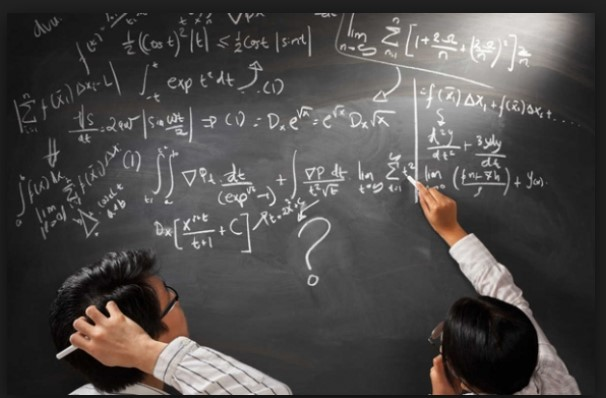

Hacer
esquemas
La
capacidad de representar una situación compleja mediante esquemas es
algo que se va aprendiendo desde los primeros años de escolaridad y
continúa en proceso de construcción toda la vida. Hacer e interpretar
esquemas son algunas de las capacidades más necesarias en nuestra vida
laboral adulta. En diversas situaciones cotidianas se requiere de la
esquematización de los sistemas, las situaciones, los procesos, con el
fin de comprenderlos mejor. Un esquema apunta a encontrar una
estrategia de solución; no existe una relación directa entre hacer un
esquema y dar solución a un problema, pero ayuda mucho en este proceso.
